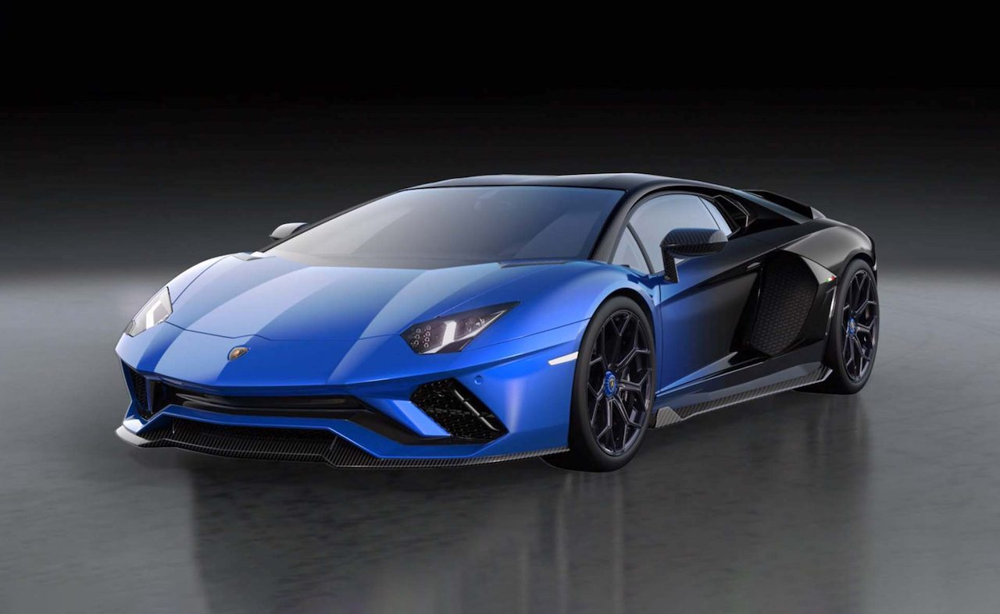

De officiële oprichtingsdatum van z'n autobedrijf, genaamd Automobili Ferruccio Lamborghini S.p.A., is volgens meerdere bronnen 30 oktober 1963. Dat is tevens de dag waarop de Autosalon van Turijn startte. Daar liet Ferruccio z'n allereerste auto, een concept met de naam 350 GTV, zien.
De geschiedenis van Lamborghini is een vrij interessant verhaal. Hoe het bedrijf ontstaat en daarna voortging voordat het uiteindelijk in handen van de Volkswagen Groep kwam is een weg van ups en downs. We nemen je even mee terug in de tijd… Ferruccio Elio Arturo Lamborghini (28 april 1916 – 20 februari 1993) groeide op in het gehucht Rezzano, onderdeel van de gemeente Cento in de streek Emilia-Romagna, in het noorden van Italië. Dat ligt pakweg 40 kilometer boven Bologna en 40 kilometer ten noordoosten van… Modena. Zijn vader was boer en verbouwde druiven. Hij had vijf zoons waarvan Ferruccio de oudste was, en besloot dat Ferruccio moest gaan studeren. Waarschijnlijk omdat zoonlief de gebruikte machines in het boerenbedrijf interessanter vond dan de druiven. En omdat Ferruccio geen aspiraties had om ook boer te worden. Antonio en Evelina Lamborghini stuurden hun zoon naar Bologna, waar hij een technische opleiding ging volgen. Welke opleiding dat precies was, is niet helemaal duidelijk; de bronnen daarover zijn niet eenduidig. Of hij de opleiding voltooide, is ook niet bekend. Dat ie technisch talent had, werd wel snel duidelijk.
Ferruccio trad in dienst als leerling bij een lokale smid en al snel kon hij aan de slag in Bologna bij een werkplaats waar men onder andere het onderhoud aan legervoertuigen verzorgde. Iets dat later een goede leerschool bleek. Op z’n achttiende startte hij een reparatiewerkplaatsje met een vriend, in z’n geboortedorp Rezzano. Ze legden zich toe op het repareren en hier en daar oppeppen van auto’s en motoren. Dit duurde niet lang, want Ferruccio werd in 1940, 23 of 24 jaar oud, opgeroepen om aan te treden in het Italiaanse leger tijdens de Tweede Wereldoorlog. Het Italië van die tijd was een verdeeld maar fascistisch bolwerk onder leiding van dictator Benito Mussolini, dat in 1939 aangesloten was bij het Duitsland van Adolf Hitler. Ferruccio diende in de Italiaanse luchtmacht en was gestationeerd op het Griekse eiland Rhodos, toen Italiaans grondgebied. Daar was hij binnen zijn regiment verantwoordelijk voor het onderhoud van rollend materieel. In 1943 veroverden de geallieerden Sicilië, waarna dictator Mussolini op last van de Italiaanse koning Victor Emmanuel III werd gearresteerd wegens het opzetten van een burgeroorlog. Door Italië veroverde gebieden gingen verloren en werden deels overgenomen door de Duitsers, en op 3 september 1943 gaven de Italianen zich over aan de geallieerden. Dat had direct invloed op het wel en wee op Rhodos: op 9 september 1943 ontstonden er gevechten tussen Duitsers en Italianen en namen de Duitsers het eiland over. Vele Italianen wisten te vluchten, velen stierven of werden krijgsgevangen gemaakt. Dat laatste gold waarschijnlijk ook voor Lamborghini, die nadien van de Duitsers toestemming kreeg om zijn onderhoudswerkzaamheden voort te zetten op Rhodos, onder regie van de Duitsers dus. Op 8 mei 1945 gaven de Duitsers zich over en werd het eiland door de Britten ingenomen (om in 1947 aan de Grieken te worden teruggegeven). Pas in 1946 keerde Ferruccio, mogelijk na krijgsgevangenschap, terug naar zijn geboortestreek.
Hij opende een werkplaats in Pieve di Cento, een dorpje direct onder zijn geboortegehucht, en trouwde met Clelia Monti. Tragisch genoeg verloor zij haar leven bij de geboorte van hun zoon Antonio (Tonino) in 1947. Naast het repareren van allerlei machines, voornamelijk gebruikt in de landbouw, sleutelde Ferruccio in z’n vrije tijd aan z’n eigen auto, een Fiat Topolino. Hij transformeerde het brave stadsgebakje tot een snerpende tweezits cabriolet. Nadat ie eerder al aan lokale races had meegedaan, schreef hij zichzelf met de omgebouwde Topolino in voor de Mille Miglia van 1948. Echt succesvol was dat niet, want op driekwart van de 1.000 mijlen parkeerde hij z’n racertje in de muur van een restaurant. Ferrari wist dat jaar overigens voor het eerst de Mille Miglia te winnen (voor de fetisjisten: met een 166 S Coupé Allemano). Ferruccio’s werkplaats veranderde in een mini-fabriekje waarin hij kleine tractoren bouwde van zelf ontwikkelde en vooral samengeraapte onderdelen. Die waren in redelijke overvloed aanwezig: al het oorlogsmateriaal was buiten gebruik gesteld, en daar wist Ferruccio wel raad mee. Dat ging zo goed dat hij in 1948 een nieuw bedrijf startte: Lamborghini Trattori. Hij bouwde nu z’n eigen tractoren, en ontwikkelde naarmate de naoorlogse machineonderdelen begonnen op te raken steeds meer onderdelen zelf. Waaronder ook dieselmotoren. In 1952 kwam de Italiaanse overheid met een subsidieregeling voor de landbouw waardoor boeren tegen zeer gunstige condities landbouwmachines konden aanschaffen, mits ze van Italiaanse bodem waren. Voor Lamborghini Trattori betekende dat een enorme boost en Ferruccio begon nu goed te verdienen en investeerde in nieuwe bedrijven.